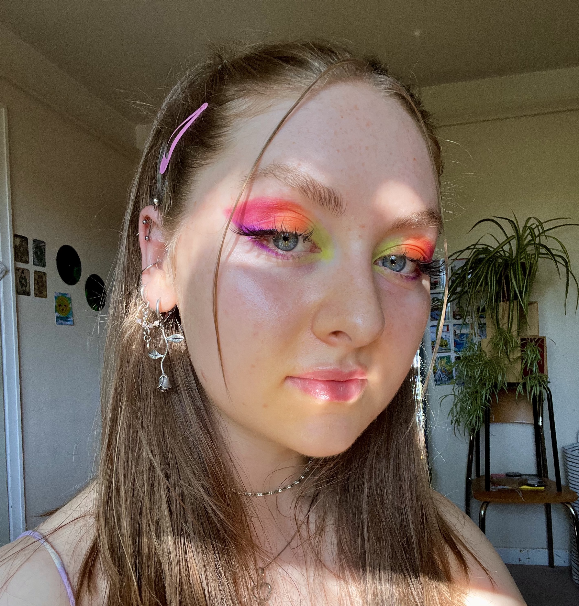
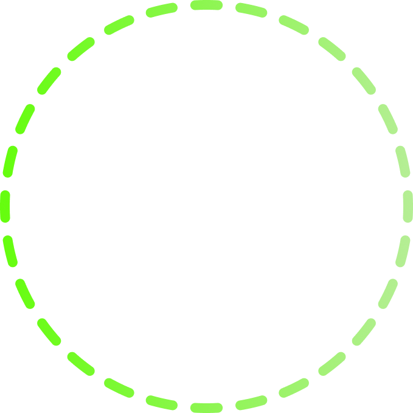

Hi, I'm Hazel °‧𓆝 𓆟 𓆞·｡
I'm currently a PhD researcher in music psychology at Durham University, exploring what happens in people's mind when listening to music — the images, stories, memories, and strange inner worlds that music influences, shapes, and colours. An imagination cartographer perhaps, mapping the thoughtscapes of the mind sculpted by music. Equal parts scientist and dreamer. Have you tried dreaming with the lights on?